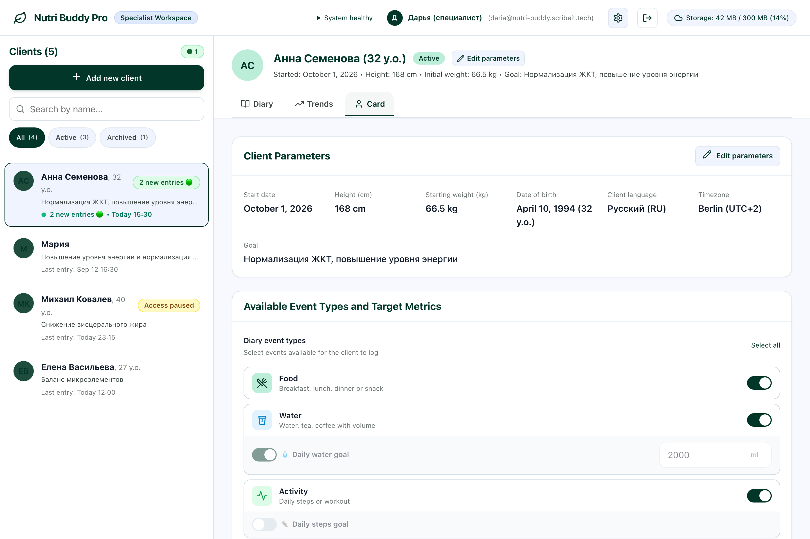
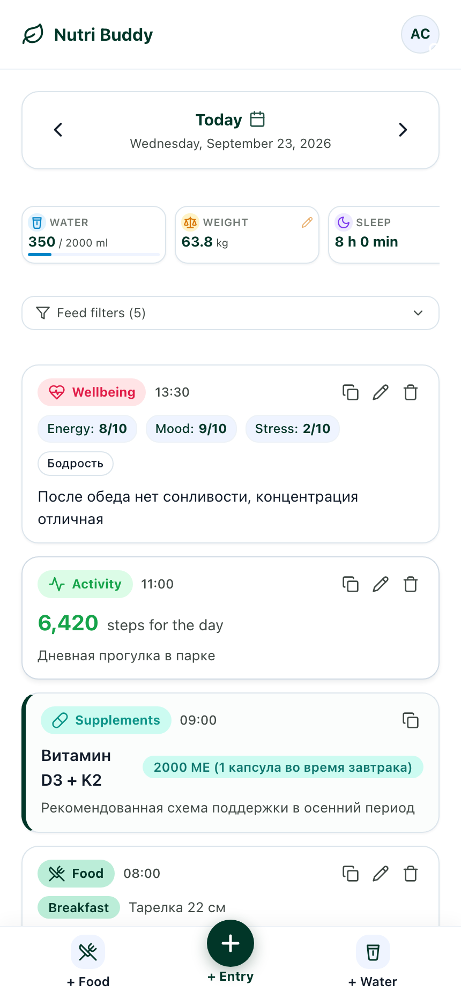

PWA / sensitive data / roles
Nutri Buddy
One food and wellbeing diary for a nutritionist and clients
Clients keep their diary in a browser or PWA, while the nutritionist has one structured history, individual settings, and a view of trends.

Context
Food, wellbeing, and habit data often arrives in fragments through messengers, leaving the specialist to manually reconstruct the history and assess change.
What I did
I independently designed and built the product: two-role workflows, a mobile client diary and specialist workspace, nine event types, individual goals, trend analytics, and CSV export. I added bilingual support, a PWA with offline drafts, access boundaries, protected attachments, and privacy operations for sensitive data.
A working MVP is deployed on its own domain: the client diary, specialist workspace, history, and trends in one product.
Selected screens
